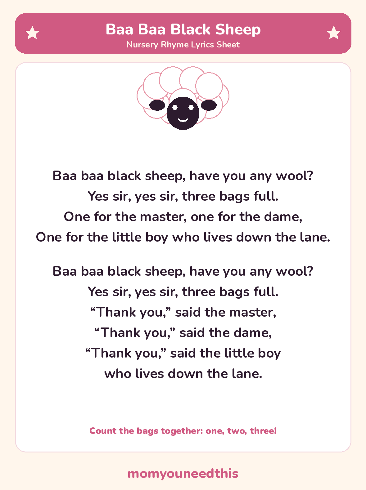

Baa Baa Black Sheep Full lyrics and a free printable lyrics sheet
This is often the first rhyme where a toddler answers back — you ask the sheep a question, and they get to be the voice that says yes. Sing it slowly at first, pause before the answer, and watch them rush to fill the gap.
Last updated: October 25, 2026
Quick Answer
The Baa Baa Black Sheep lyrics are a short conversation: “Baa baa black sheep, have you any wool? Yes sir, yes sir, three bags full.” This nursery rhyme page gives both verses in full — the three bags verse and the thank-you verse — plus a free printable lyrics sheet to sing from at home.
At a Glance
- Rhyme: Baa Baa Black Sheep
- Type: Question-and-answer rhyme
- Best for: Ages 1–5
- Printable: 1 lyrics sheet
- Tradition: In print since 1744
- Cost: Free — print at home
🎵 Baa Baa Black Sheep Lyrics
The first verse is the one everyone knows. The second — the thank-you verse — is a traditional extra that many families add, and it is printed here too, so the song on this page and on the sheet is complete.
Baa baa black sheep, have you any wool?
Yes sir, yes sir, three bags full.
One for the master, one for the dame,
One for the little boy who lives down the lane.
Baa baa black sheep, have you any wool?
Yes sir, yes sir, three bags full.
“Thank you,” said the master,
“Thank you,” said the dame,
“Thank you,” said the little boy
who lives down the lane.

✂️ Download Your Free Baa Baa Black Sheep Lyrics Sheet
The full lyrics on one sheet — big, clear lines for young readers.
⬇️ Download Free Lyrics Sheet 🖨️ Print🎁 Free printable for ages 1–5
🐑 About This Rhyme
This rhyme is built like a tiny conversation, and that is its gift: one singer asks a question and the other answers it, so even a very young child can take the sheep's part — “yes sir, yes sir” — long before they can manage a whole song. Swap roles on the second verse and your toddler gets to do the asking.
It is also a counting and sharing rhyme in disguise: three bags of wool, counted out one by one to the master, the dame and the little boy down the lane. And if the tune sounds familiar, it should — it is the same melody family as “Twinkle Twinkle Little Star” and the alphabet song.
🖨️ How to Use This Rhyme
- Split the parts. You ask “have you any wool?” and your child answers “yes sir, yes sir, three bags full” — then swap on the second verse.
- Count the bags. Hold up fingers as each bag is given out: one for the master, one for the dame, one for the little boy.
- Print the lyrics sheet. Both verses, in big clear lines — keep it by the chair where you sing.
- Let your child “read” it back. Following the lines on the sheet while they sing is early reading confidence, built one verse at a time.
🎵 More Nursery Rhymes & Fun
🎵 Nursery Rhymes
The full hub of classic nursery rhymes — lyrics and a free printable sheet for every rhyme. Browse all nursery rhymes.
🚣 Row Row Row Your Boat
The rowing rhyme you can also sing as a round, with lyrics and a printable sheet. Sing Row Row Row Your Boat.
🌸 Ring Around the Rosie
The singing game rhyme — hold hands, walk in a circle, and all fall down. Play Ring Around the Rosie.
🎨 Free Coloring Pages
Hundreds of free coloring sheets to print for every age. See the coloring pages.
❓ Baa Baa Black Sheep FAQ
What are the lyrics to Baa Baa Black Sheep?
The full words are in the lyrics section near the top of this page — both traditional verses, including the thank-you verse. The free printable sheet carries the same words, if you'd rather sing from paper than a screen.
What age is Baa Baa Black Sheep for?
It suits ages 1 to 5. Babies and young toddlers love the baa sounds and the question-and-answer pattern; preschoolers can take both parts, count the bags and sing the thank-you verse.
Can I print the lyrics sheet?
Yes — the lyrics sheet is free to print at home, with no signup. Print it as many times as you like for your own family or classroom.
What does “dame” mean in Baa Baa Black Sheep?
“Dame” is an old word for a lady — here, the mistress of the house, just as the “master” is its head. The rhyme shares the three bags of wool out between the grown-ups of the house and the little boy who lives down the lane.